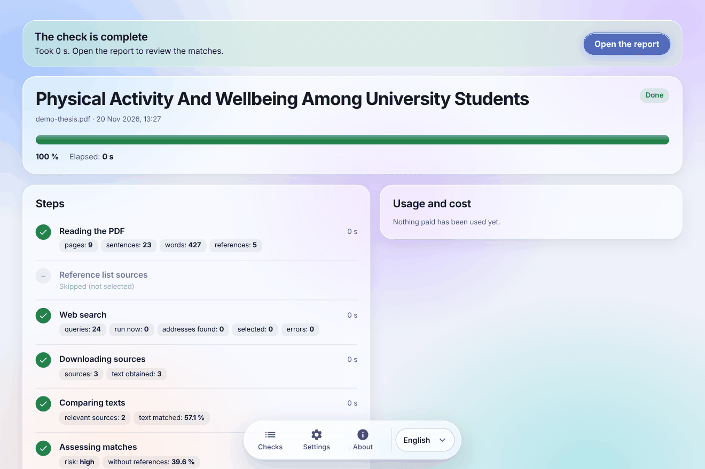

Whole-text comparison
Each source is compared with all sentences of the thesis, so copied paragraphs are found even when only one sentence was searched.
Desktop app · Windows · macOS · Linux
Add a thesis PDF and press Start. Plagiarism searches the web, downloads the sources, compares each of them with the whole text, lets an AI model judge every match and shows a clear, interactive report.
Free · runs on your computer · English and Lithuanian

Six automatic steps. You see each of them live on the progress screen and can pause, resume or cancel at any time.
Reads the PDF and keeps only the main text: the table of contents, tables, headings and the reference list are left out. Quotations and citations are marked.
Turns sentences into search queries and looks for them on the web (Google via Serper, Tavily or DuckDuckGo). Already made queries are cached.
Downloads the candidate sources and dates them. Blocked publishers are reached through open-access copies, Europe PMC, OpenAlex/Crossref and the Wayback archive.
Compares every source with the entire text – not just the sentence that was searched – so whole copied passages and paraphrases are found.
An AI model labels each match (verbatim, paraphrase, proper quotation, common phrase…) and checks whether the source is cited nearby. Then it writes an overall conclusion.
An interactive report with the overall risk, a page map, every source and side-by-side sentence pairs. Export to HTML, PDF, CSV, JSON or ZIP.
Each source is compared with all sentences of the thesis, so copied paragraphs are found even when only one sentence was searched.
Publication dates come from Crossref, OpenAlex, page metadata and the Wayback archive. Sources newer than the thesis are marked as “reverse” and not counted.
Is the source in the reference list? Is its author cited next to the sentence? Are there quotation marks? Proper quotations are not counted as problems.
Rare shared words and word sequences reveal texts rewritten with a few words changed.
Words, percentage of the text, pages and the longest continuous passages – per source and in total.
Online copies of the thesis itself and the author's own articles are detected and reported separately.
Every step with counters, the current activity, cost so far, time left, warnings and a full log. Interrupted checks resume where they stopped.
Everything runs and is stored on your computer. Keys are kept in the system's credential store.
Choose the file for your system above.
chmod +x Plagiarism-*.AppImage and run it. If it does not start, install FUSE 2: sudo apt install libfuse2.The first-start wizard asks for them and tests each one. You can skip it and try the offline demo first – see the guide below for where to get the keys.
Check the detected title and pages, look at the estimate and start. You will get a notification when the report is ready.
Keys are entered once in the app and stored in Windows Credential Manager, macOS Keychain or the Linux Secret Service. With no keys at all, the app can still use free DuckDuckGo search and automatic metrics without AI.
Google results through an API. The best coverage for this task.
2,500 free queries for a new account (enough for a ~200-page thesis), then about $1 per 1,000.
Sign up at serper.dev → API key on the dashboard → copy it into Plagiarism.
serper.dev ↗Labels the matches and writes the conclusion. Claude Sonnet is the default.
Pay as you go; about $0.50–1.50 per 200-page thesis.
console.anthropic.com → Billing: add credit → API keys → Create key.
console.anthropic.com ↗Finds free legal copies of journal articles, so fewer sources are “unreachable”.
Free – only your e-mail address, no sign-up.
Just enter your e-mail address in Plagiarism.
unpaywall.org ↗Used automatically when Serper credits run out.
1,000 free queries every month.
Sign up at tavily.com → copy the key that starts with tvly-.
Use instead of Anthropic if you prefer. Any OpenAI-compatible endpoint can be set in Settings.
Pay as you go; GPT-5 mini costs well under $1 per thesis.
platform.openai.com → Billing: add credit → API keys → Create new secret key.
platform.openai.com ↗Never share your keys or paste them into documents. You can revoke a key on the service's website at any time.
The same formulas as the estimate the app shows before starting (the app's figure is more precise – it counts the real sentences).
Repeating a check costs almost nothing: search and AI results are cached.
Every match gets an automatic category from the text comparison and, with AI enabled, a label that takes citations into account. Only the first three labels count as problems.
Shared word sequences are highlighted.
Usually 20–40 minutes for a 200-page thesis with Serper; up to an hour or more with free DuckDuckGo search. The estimate before starting shows the expected time for your document.
Open it from Checks and press Resume. Search queries, downloads and AI answers are cached, so nothing that was already done is repeated or paid for twice.
Some publishers block automatic downloads. Plagiarism then tries open-access copies, Europe PMC, Crossref/OpenAlex and the Wayback archive; if all fail, the search snippets or the abstract are assessed with lower confidence. You can add the article as a local source.
Files you add yourself – for example paywalled articles from the reference list. Put the year in the file name (Smith_2002_review.pdf) so the date can be checked too.
Yes. Enable free DuckDuckGo search in Settings and choose “no AI”: you get the automatic categories and percentages without AI labels. The built-in demo runs completely offline.
The interface and reports are in English and Lithuanian. The checked documents can be in any language that uses spaces between words; the AI conclusion is written in the report language. Adding a language takes one translated JSON file.
Yes. The exported HTML report is a single file that works offline in any browser and has its own language switch. There is also a printable PDF summary and CSV/JSON data.
The builds are made automatically by GitHub Actions from the public source code; every release lists SHA-256 checksums. They are not code-signed yet, which is why Windows and macOS show a warning the first time.
Plagiarism is written in Python. The same engine runs from the command line, and every push to the main branch builds and publishes new installers.
pip install -r requirements.txt
python run.py estimate --pdf thesis.pdf
python run.py all -y --pdf thesis.pdf --lang en
python run.py verify --llm none # no AIpython -m app.main # desktop app
python -m pytest
pip install -r requirements-dev.txt
pyinstaller packaging/plagcheck.specCopy plagcheck/locales/en.json to <code>.json, translate the values and run the tests – the app, the reports and the exports pick it up automatically.